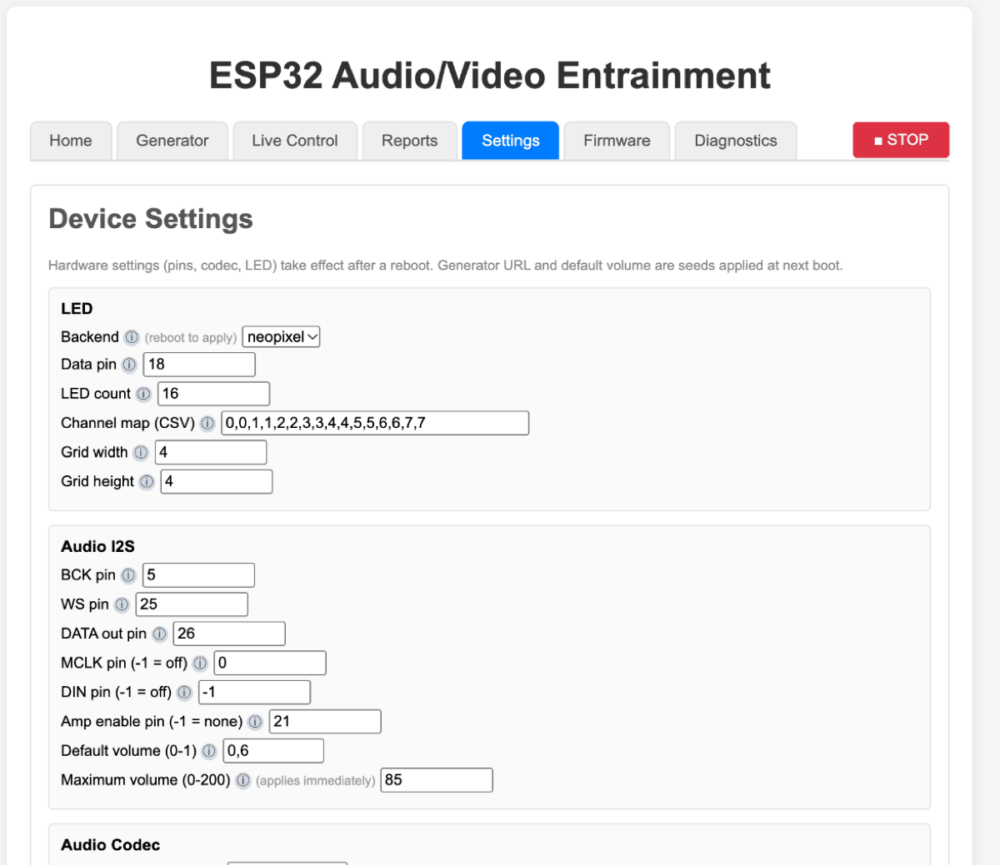

Settings
What you are trying to achieve: change something about the device without breaking it. Most of this page describes the hardware your device is wired as, which you set once and then leave alone. A handful of entries are genuinely day-to-day.
How saving works
The buttons at the bottom of the Settings tab:

| Button | Does |
|---|---|
| Save | Writes the whole form to the device's permanent storage and reloads it back into the page. Confirms Settings saved (reboot to apply hardware changes). |
| Save & Reboot | Saves, then restarts the device so hardware changes take effect. The page will be unreachable for a few seconds. |
| Restore Defaults | Asks Restore all settings to firmware defaults? and then resets everything — including your WiFi credentials, which means the device comes back on its own access point. |
| Reload | Discards your unsaved edits and re-reads the device's current values. |
| ⬇ Export settings | Downloads the live configuration as
freeesp32_ave-settings-<timestamp>.json. The WiFi
password is not included. |
| ⬆ Import settings | Loads a previously exported file into the form for review. Nothing is applied until you press Save. Importing preserves the device's stored password, since the export never contained it. |
The form hides what does not apply to you. Choose the direct-GPIO LED backend and the addressable-strip fields disappear; set the codec to none and the codec I2C fields go away. Hidden fields keep their values — they are just not in your way. Every field has an ⓘ icon with help text on hover.
Dropdown options your firmware was not built with appear greyed out and marked (not compiled in). That is information, not a fault: it tells you which LED backends and audio codecs this particular build can actually drive.
Safe to change any time
| Setting | Group | Notes |
|---|---|---|
| Maximum volume (0-200) | Audio I2S | A master gain in percent, applied to everything. Takes effect immediately — no reboot. 100 means no change; 10 would make a session authored at volume 80 play at 8 %. Above 100 it boosts, which is often what you want (see below), at the cost of possible clipping on loud content. |
| Default volume (0-1) | Audio I2S | The output volume applied at startup, 0.0 to 1.0. A seed for the next boot, not a live control. |
| Store reports in | Reports | none (display only), local (this browser) or spiffs (on the device). Reports are also uploaded to the generator whenever its URL is set. |
| Generator URL | Network | Base URL of an external generator server used to load and save sessions and upload reports. Leave blank to disable those features. Read at boot. |
| mDNS hostname | WiFi | The name before .local. Needs a reboot, but entirely
safe — the device is still reachable by IP and on its access point if
you get it wrong. Only letters, digits and hyphens survive. |
| WiFi SSID / WiFi password | WiFi | Needs a reboot. Safe in the sense that it cannot brick anything: a network it cannot join just sends it to its own access point, which you can always reach. The stored password is never displayed — leave the field blank to keep it. |
Turning the volume up
Maximum volume is the setting most people need and the one least obvious from its name. The audio engine permanently reserves headroom for sixteen simultaneous channels, whether or not they are in use, so a single tone at full channel volume with this cap at 100 leaves the device output at about −27 dBFS — some 24 dB of range unused. No shipped session uses more than four channels at once, so almost every session is quieter than it needs to be.
Hardware settings: set once, then leave alone
Everything else on the page describes how your device is physically built, and takes effect only after a reboot. These are the groups:
| Group | What it describes |
|---|---|
| LED | Backend — neopixel (WS2812/SK6812, one data wire), dotstar (APA102, data + clock), or direct (eight discrete GPIOs driven by PWM, brightness only, no colour) — plus the data and clock pins, LED count, channel map, logical grid size, the eight direct-channel pins and their active-low mask, and the DotStar SPI clock. Changing the backend changes what the Live Control LED rows can do. |
| Audio I2S | The digital audio pins — BCK, WS, DATA out, MCLK, DIN — the amplifier
enable pin, and the two volume settings above. -1 means
"not wired" for the optional ones. |
| Audio Codec | Which external codec chip controls the audio output (none for a passive DAC on raw I2S), and its I2C port, SDA, SCL, bus frequency and reset pin. |
| SD Card | The four SPI pins for the microSD card. Only shown when the firmware has SD support compiled in. |
| Controls | Button GPIO — the momentary button (wired to ground,
internal pull-up). Short press logs a live-state snapshot, a
three-second hold stops everything, and holding it during power-on
forces setup mode. -1 disables it, which also removes your
hardware escape route into setup mode. |
If the audio is silent and the codec seems fine, check the codec
reset pin. A codec held in reset acknowledges nothing on I2C, so the
whole bus scans as empty and it looks like a wiring or a chip fault. Set
Codec ~RESET pin to -1 if your board ties the
codec's reset to the board reset and the firmware should not touch it.
The device refuses some pin numbers. That is on purpose.
If you type certain GPIO numbers into a pin field and press Save, the save fails with an error naming the field, something like:
Save failed: Error: HTTP 400 — and in the response body,
settings apply failed: led_data_pin = GPIO 6: wired to the SPI flash or
PSRAM.
This is a guard, not a bug. Some of the chip's pins are bonded to the flash memory the firmware lives in and to the PSRAM it runs from. They are real, usable-looking pins, and the chip's own "is this a valid GPIO" check says yes to them — it answers "does this pad exist", not "is it safe to use". Assign one to an LED or an I2S line and the bad value is written to permanent storage before the reboot that would apply it. The device then reconfigures a flash line as an output at boot and can no longer read its own firmware: a boot loop that cannot be fixed over the network, only by plugging in a USB cable and reflashing it by hand.
So the firmware keeps a list of those pins, snapshotted at startup before any driver has claimed anything, and refuses them outright. There is no legitimate use for them, so there is no trade-off being made on your behalf. Two possible reasons appear:
wired to the SPI flash or PSRAM— the pin exists but belongs to the memory bus. Pick another.not a GPIO on this chip— the pin number is out of range or that pad is not present on your chip variant.
Two related behaviours worth knowing about:
- Stored bad pins get disarmed at boot. If a value from an
older firmware or a build-time default happens to name one of these pins,
the firmware forces it to
-1at startup — that feature goes quiet instead of fighting the memory bus — and writes the correction back so it does not reappear every boot. You will see it in the device log on the Diagnostics tab. A feature that mysteriously stopped working after an update is worth checking for here. - Two settings claiming the same pin is only a warning.
The firmware logs
GPIO 5 claimed by BOTH 'button' and 'i2s_bck' — peripherals will interfere; fix one in Settingsand carries on, because an inactive backend's pins are harmless. This has caused genuinely baffling symptoms before — a button on the audio bit clock gave perfect clocks and total silence — so if something is inexplicably dead, read the boot log for that line before suspecting the hardware.
Browser preferences
Below the device settings is a separate section stored in your browser, not on the device. Different laptop, different settings.
| Setting | What it is |
|---|---|
| Speech (TTS) engine | Which engine speaks the narration in sessions that have it. Puter.js (browser, neural — no key) runs in your browser and needs internet there, and may prompt a Puter sign-in. Google (proxied via the device) needs the device to be online. Changing it changes the voice. |
| ⤓ Preload all speech | Synthesises every phrase in every session now and caches it in this browser, so you can play speech sessions later with no internet. Run it again after changing the engine or adding sessions. |
| ⇪ Sync speech to SD card | Uploads those phrases to the device's card so sessions run with no browser at all. See offline playback. |
| Show safety info again | Clears this browser's acknowledgement of the epilepsy/photosensitivity notice, so it is shown again before the next flicker session. The status line above the button tells you which state you are in. |
A note on security
None of the device's interface is authenticated. Anyone who can reach it on the network can change every setting here, upload files, start a session or push firmware to it. Keep it on a network you trust and never expose it to the internet.